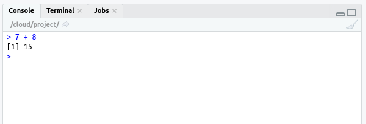
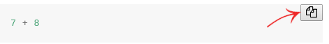

1 Introduction
1.1 Why learning R?
R is a computer language designed by statisticians. I think it is fair to say that R became in the recent year the “lingua franca” of data science and statistics. R is an open source software and an extremely powerful tool for any kind of task in scientific computing. It is not only great for data transformation, data visualization and statistical analyses. It is has also the capacity to deal with big data or to do text mining and analysis of internet pages and to do machine learning and more.
R has a very large and active open source user community. For that reason, it very easy to find online help if you have questions and if you need support for analysis problems that are difficult to handle (see section 2). Moreover, the language is constantly improving and hundreds of data scientists have develop extensions for R (so-call packages) that implement various classical and novel statistical methods. You can do indeed any statistical analysis you can think of in R.
Please keep in mind: R ’s learning curve is steep partially due to its syntax and the rules of the programming language that you have to learn. R reads less like English, and in general is more difficult for beginners to wrap their heads around. However, once you got familiar with R, it makes processing of data much easier as compared to tools such as Excel or SPSS.
1.2 What do I learn in this course?
This course is merely a first introduction to R. It does not required any pre-knowledge in computer programming (For those of you who have already experiences with any kind of programming language, I guess it’s is not a big deal to learn R).
This course will teach you the minimum about computer programming that you need to practice data science and get started with doing data analyses in R. We will use R (and RStudio) predominantly as an interactive environment for data science that enables you to read, process and analyse data. If you want to develop your R skills beyond is basic usage and if you want to use R as a programming language to develop your own programs and/or packages, I point you to the advanced literature in the appendix A.
1.3 What is RStudio?
As said before, R is just a programming language, which executes commands and produces certain output. To interact with the programming language, we need a program that enables us to enter the commands and edit scripts that should be executed by R scripts. Moreover, we need a program that display the output of our R programs, that is, to show results of our calculation or display graphics that we made with R.
RStudio is a program which does this (and more) for us. RStudio is a so-called integrated development environment (IDE) for R programming. It is the interface that we use in this course to intact with the programming environment R and it looks like this
Figure 1.1: RStudio Window
1.3.1 The RStudio Interface
If you open RStudio, you get a window which look like Figure 1.1. RStudio has
- a console that you will use to enter commands and try out code (appearing as the bottom left window)
- there is a script editor on the top left
- a window with the ‘’Environment’’ tab (top right window), which shows functions and objects you have created and which are currently in memory, and
- a window that shows plots, files packages, and help documentation (bottom right)
You will learn more how to use this program during this course.
If you have already programming experiences and a strong preference for a certain coding editor or IDE, you may use your preferred coding environment and integrate the R command line software to run your scripts.
Using coding editors is never as comfortable as working with the specialized tool RStudio. However, some nerds want the puristic command line experiences.
1.4 Code examples
The manual comprises many code examples. A code example always looks like this:
The output that R returns in the console after processing the command is indicated in the manual with ## and looks like this:
## [1] 15It is suggest to execute the code examples in your own R-console and see what the results are. To do so, copy & paste the code in the console and press enter. R executes the code and give you feedback. In RStudio it like this:

Hint: You can copy the code examples from the online manual by the clicking on the ‘copy-button’, which appears if you move with the mouse course to right-top corner of the code example field.

1.4.1 Text boxes
There are different types of text boxes:
Important information.
Additional information for advanced learners. This is only for nerds and not relevant for most students. If you want, can simply ignored it.
This icon indicates an exercise. Solutions to some exercise problems are provided and help to check whether you understood the learning material. In the online version the solutions are hidden and will be display only on request.
1.5 Trial-and-error learning
Trial-and-error is very essential for learning to program. I therefore suggest: Play around with the code examples and see happens if you change them.
You will face many error and warning messages as a consequence. But that fine! Learning to understand error messages is, in my view, the key to learn to program. Thus, read the error messages always carefully (instead of freaking out) and try to figure out what the origin of this underlying error is. This is not always easy and finding a bug in a program code (called debugging) is often very time-consuming. However, it is an important (if not the most important) skill for any data scientist.
Don’t worry, if you have the feeling at the beginning that you spend most of your time with debugging—you have to know, is quite normal.